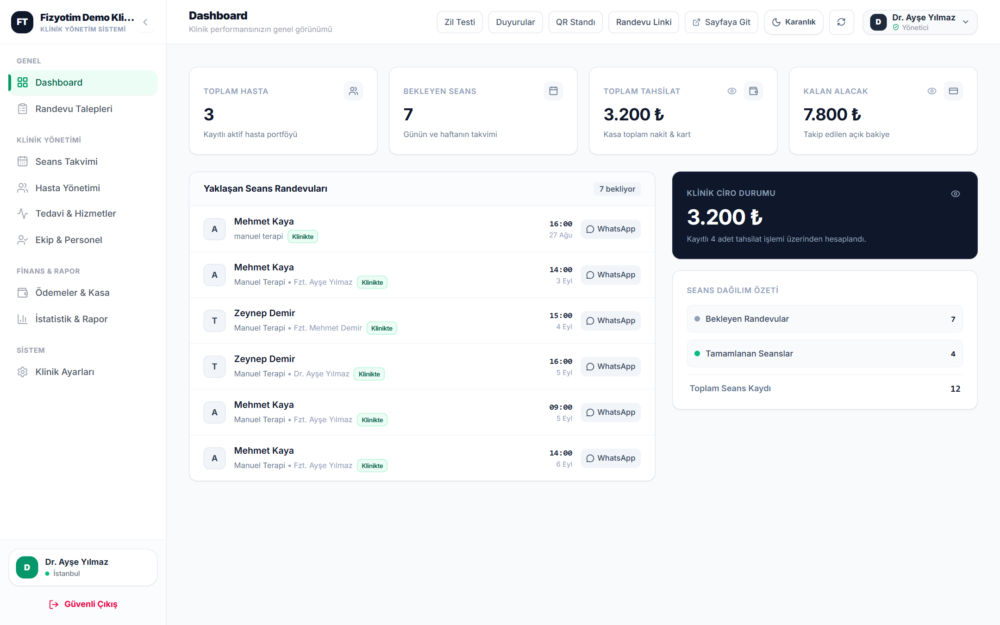
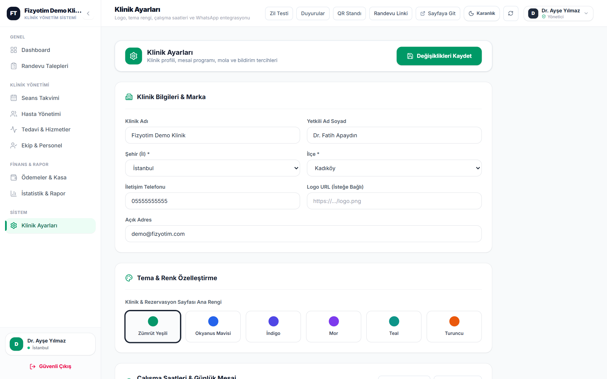

FT Fizyotim
Randevu, Seans & Danışan Odaklı İşletmeler İçin Bulut Yazılım
Randevu, danışan takibi
ve tahsilat —
tek ekranda.
Defter, Excel ve dağınık mesajlaşma karmaşasına son. Dinamik takvim, paket/seans takibi, kasa & resmî makbuz, ekip yetkilendirme ve paralel çalışan online randevu platformu tek bir bulut ekosisteminde.

Kapsamlı Ürün & Sistem Tanıtım Dokümanı14 gün ücretsiz deneme · Kredi kartı gerekmez
Neden Fizyotim?
Randevu ile çalışan her işletmeye hazır altyapı
İlk olarak fizyoterapi kliniklerinin yoğun seans ve paket temposu için geliştirilen Fizyotim; randevu, paket takibi ve tahsilatla çalışan tüm uzmanlık merkezlerine birebir uyum sağlar.
😓 Klasik Yöntemlerde Yaşanan Kayıplar
- Ajanda ve telefon trafiğinde çakışan randevular
- Unutulan randevular yüzünden boş kalan saatler
- "Kaç seansı kaldı, ne kadar ödedi?" karmaşası
- Mesai dışında gelen randevu telefonlarına yetişememe
- Tüm personelin kasa ve ciro verilerini görmesi
✅ Fizyotim ile Kazandıklarınız
- Sürükle-bırak haftalık takvim ve otomatik mola kilidi
- 7/24 çalışan paralel online randevu ve keşif portalı
- Otomatik seans düşümü, bakiye ve FIFO borç takibi
- Tek tıkla kurumsal antetli PDF rapor ve tahsilat makbuzu
- Rol bazlı yetkilendirme (RBAC) ile güvenli ekip yönetimi
Sektörel Kullanım & Terminoloji Uyum Tablosu
| Sektör / İşletme Türü | Danışan Karşılığı | Takvim & Paket Kullanımı | Öne Çıkan Modül |
|---|
| Fizyoterapi & Rehabilitasyon | Hasta / Danışan | 8-10 seanslık tedavi paketleri, Klinikte / Evde terapi | Hasta Özeti PDF, Tekrarlayan Paket |
| Psikolog, Diyetisyen & Koçluk | Danışan | Bireysel seanslar, Online (Uzaktan) veya yüz yüze görüşme | Hizmet Yeri (Uzaktan), KVKK Maskeleme |
| Pilates, Yoga & PT Stüdyoları | Üye / Sporcu | Haftalık düzenli ders paketleri, eğitmen bazlı ders takvimi | Eğitmen Performansı, Paket Tamamlanma % |
| Güzellik, Estetik & Spa | Müşteri / Danışan | Cilt bakımı, lazer ve masaj seans paketleri, uzman seçimi | QR Masa Standı, Tahsilat & Borçlu Takibi |
| Diş, Podoloji & Özel Muayenehane | Hasta | Hekim bazlı randevu planlama, işlem ve kontrol takibi | RBAC Sekreter/Hekim Yetkisi, Kasa Raporu |
5 dkBulut kurulum süresi
7/24Online randevu kabulü
%0Kurulum & komisyon ücreti
Çift Yönlü Bulut Mimarisi
Yönetim Paneli ve Online Randevu Sitesi paralel çalışır
Fizyotim tek bir yazılım değil, aynı gerçek zamanlı veritabanı üzerinde senkronize çalışan iki paralel uygulamadan oluşur: işletmenizin kullandığı Klinik Yönetim Paneli ve danışanlarınızın kullandığı Online Randevu & Keşif Platformu (fizyo-booking).
1. Klinik Yönetim Paneli
Yönetici, uzman ve sekreter ekranı. Takvim planlama, hasta kabul, paket tanımlama, kasa, makbuz ve raporlama burada yürütülür.
⚡ Anlık Senkron
Ortak Veritabanı
↔
2. Online Randevu Platformu
Danışanların 7/24 müsait saatleri gördüğü, uzman seçip randevu talebi gönderdiği ve kalan paket seanslarını sorguladığı vitrin sitesi.
Yönetim Paneli Takvimi: 2 Eyl 08:00 ve 5 Eyl 09:00 seansları
Hasta Randevu Sitesi: Aynı saatler anında "DOLU" olarak kilitlenir
Paralel Çalışma Senaryosu Nasıl İşler?
- Çakışma Sıfırlama: Yönetim panelinden bir saate randevu girdiğiniz veya öğle molası tanımladığınız anda, online randevu sitesinde o kutu otomatik olarak DOLU veya KİLİTLİ hale gelir.
- Canlı Talep Akışı: Danışan online siteden yeşil MÜSAİT kutuya tıklayıp talep gönderdiğinde, yönetim panelinizde sesli bildirim çalar ve Randevu Talepleri sekmesine düşer.
- Çift Yönlü Paket Takibi: Siz panelde bir seansı "Tamamlandı" olarak işaretlediğinizde, danışan kendi ekranındaki Randevu Durumu Sorgula penceresinden kalan seans hakkını ve ilerleme yüzdesini anında güncel görür.
01 · Genel Bakış (Dashboard)
İşletmenizin nabzı tek bir ekranda
Giriş yaptığınız anda toplam danışan, bekleyen seans, toplam tahsilat ve açık alacak bakiyesini görürsünüz. Yaklaşan seanslar saat sırasıyla listelenir.
Dashboard — özet finans ve seans kartları, yaklaşan randevular, ciro durumu ve seans dağılım özeti
👁️ Finansal Gizlilik Modu
Tahsilat, alacak ve ciro kartlarındaki göz ikonuna tıklayarak yanınızda danışan varken rakamları tek tıkla gizleyin.
🔔 Anlık Sesli Bildirim
Online randevu platformundan yeni bir talep geldiğinde üst bardaki bildirim sistemi sesli ve görsel uyarı verir.
⚡ Hızlı Üst Araç Çubuğu
Duyurular, Masaüstü QR Standı, Randevu Linki Kopyalama ve Karanlık Mod geçişi her sayfada elinizin altındadır.
02 · Seans Takvimi
Sürükle-bırak destekli, akıllı haftalık takvim
Haftalık takvimde her seans kartı üzerinde danışan adı, paket ilerleme durumu (ör. 1/10, 3/8), tedavi adı, hizmet yeri (Klinikte / Evde / Uzaktan) ve uzmanın renk kodu yer alır. Seansları fareyle tutup başka bir gün veya saate sürükleyerek taşıyabilirsiniz.
Haftalık takvim — renk kodlu seans kartları, öğle molası koruması (12:00) ve kapalı gün (Pazar) kilidi
Hızlı tekli randevu oluşturma
- Takvimdeki herhangi bir boş (+) hücresine tıkladığınızda tarih ve saat otomatik seçili açılır.
- Tedavi seçildiğinde o hizmeti veren uzmanlar otomatik filtrelenir.
- Seans Hizmet Yeri: Klinikte, Evde veya Uzaktan etiketiyle kaydedilir.
- Geçmişe dönük randevu kutucuğu ile geçmiş seansları da işleyebilirsiniz.
03 · Paket Planlama & Liste Görünümü
8–10 seanslık paketleri tek tıkla takvime dizin
Düzenli gelen danışanlar için her haftaya tek tek randevu girmek yerine Tekrarlayan Seans Paketi aracını kullanın; sistem başlangıç tarihinden itibaren seçtiğiniz seans sayısı kadar haftalık randevuyu otomatik oluşturur.
Tekrarlayan Seans Paketi Özellikleri
- Danışan, tedavi, uzman, başlangıç tarihi, saat ve Seans Sayısı (ör. 8 veya 10 seans) seçilir.
- Sistem her seansı
Tekrarlayan Seans (1/8) şeklinde numaralandırır.
- Öğle molası saatine denk gelen seansları otomatik algılar ve uyarı verir.
- Klinikte, Evde ve Uzaktan lokasyon etiketlerini tüm pakete uygular.
Seans listesi & Excel dışa aktarma
Liste görünümü — tüm randevuları tablo halinde filtreleyin, durumunu değiştirin veya tek tıkla Excel'e aktarın
04 · Online Randevu Talepleri & QR Stand
Danışandan gelen talepleri tek tıkla onaylayın
Online randevu platformundan veya hasta portalından iletilen tüm talepler Randevu Talepleri ekranına düşer. Onayladığınız talep otomatik olarak seans takvimine eklenir; reddettiğiniz taleplerde ise red nedeni danışanın sorgulama ekranında gösterilir.
Randevu Talepleri — Bekleyenler, Onaylananlar, Reddedilenler ve Tümü filtreleri
Danışma masası için hazır QR standı
Üst menüdeki QR Standı butonuna tıklayarak işletmenizin adıyla hazırlanmış masaüstü randevu standını anında oluşturun.
- Yazdır / PDF: A4 boyutunda baskıya hazır PDF çıktısı alın ve danışma masanıza yerleştirin.
- QR İndir & Link Kopyala: Karekodu görsel olarak sosyal medya gönderilerinizde veya profilinizde paylaşın.
- Danışanlar seans çıkışında bankoda beklemeden kamerayla kodu okutup sonraki randevusunu alır.
05 · Danışan Portföyü & Hizmet Tanımları
Tüm danışan kayıtları ve seans ilerlemeleri
Kayıtlı tüm danışanlarınızı iletişim bilgileri, ön tanı/şikayet notu ve görsel Seans İlerlemesi çubuğu (ör. 1/10, 3/10) ile tek listede görüntüleyin. Mükerrer telefon kontrolü sayesinde aynı numarayla ikinci kez hatalı kayıt açılması engellenir.
Hasta Yönetimi — hızlı arama, iletişim, tanı ve seans ilerleme çubuğu
Tedavi & hizmet tanımları
Sunduğunuz her hizmetin adını, seans süresini (dk), birim fiyatını ve o hizmeti uygulayacak uzmanları tanımlayın. Online randevu sayfasında yalnızca o hizmete atadığınız uzmanlar seçilebilir.
Tedavi & Hizmetler — süre, fiyat ve uygulayan uzman eşleştirmesi
06 · Detaylı Danışan Kartı & PDF Raporlama
Danışan geçmişi, bakiye ve resmî PDF belgeler
Listeden bir danışana tıkladığınızda açılan Detaylı Danışan Kartı; planlanan, tamamlanan ve kalan seans sayısını, yüzdesel tedavi ilerleme çubuğunu ve kalan borç/bakiye durumunu tek bakışta sunar.
Detaylı Hasta Kartı — Planlanan/Tamamlanan/Kalan seans, açık bakiye, ilerleme çubuğu ve seans geçmişi
📄 Seans Raporu PDF
Danışanın katıldığı tüm seansların tarih, saat, yapılan uygulama ve uzman bilgilerini içeren kurumsal antetli PDF raporu tek tıkla indirilir.
🖨️ Hasta Hesap Özeti PDF
Toplam seans tutarı, yapılan ödemeler ve kalan bakiye dökümünü resmi belge formatında PDF olarak üretir; danışana veya kurumlara sunulabilir.
➕ Paket Yenileme & Kopyalama
Paketi biten danışana + Seans / Paket Ekle ile yeni dönem tanımlayın veya geçmiş bir seansı Randevuyu Kopyala ile yeni haftaya çoğaltın.
07 · Ekip Yönetimi & Rol Bazlı Yetkilendirme (RBAC)
Her personel sadece yetkili olduğu sekmeleri görür
Uzmanlarınızı ve sekreterlerinizi sisteme ekleyin. Her ekip üyesi kendi e-postası ve şifresiyle giriş yapar; hangi menü sekmelerine erişebileceğini (ör. sadece Takvim ve Hastalar) siz belirlersiniz. Kasa ve ciro verileriniz tam koruma altında kalır.
Ekip & Personel — rol rozeti, erişim izni (ör. Tam Yetki 9/9 veya 3 Sekme), atanan tedaviler ve takvim rengi
Uzman performans ve seans dağılım analizi
Personel Performansı — uzman bazında atanan, tamamlanan ve bekleyen seans karşılaştırması ile seans payı (%)
08 · Ödemeler, Kasa & Resmî Tahsilat Makbuzu
Tahsilat, borçlu listesi ve dijital makbuz yönetimi
Nakit, kredi kartı ve havale tahsilatlarını kaydedin. Toplu ödemelerde sistem borçları en eski seanstan başlayarak otomatik (FIFO mantığıyla) kapatır. Açık bakiyesi olan danışanlar Borçlular sekmesinde otomatik listelenir.
Ödemeler & Kasa — toplam tahsilat, kalan alacak, ödeme listesi ve hızlı makbuz butonları
Tahsilat Makbuzu & Paylaşım Paneli
- Her tahsilat için benzersiz belge numaralı (ör.
#MAK-2026-E8ADE67F) resmî görünüm üretilir.
- Kurumsal PDF İndir: Kaşeli ve onaylı PDF tahsilat makbuzunu tek tıkla indirin.
- E-Posta ile Gönder: Makbuz detaylarını danışanın e-posta adresine iletin veya metni kopyalayın.
- Borçlular Sekmesi: Kalan borcu olan danışanları tek listede görüp tahsilat girin.
09 · İstatistik & Finansal Raporlar
Büyümenizi grafiklerle ve net verilerle izleyin
Toplam gelir, aktif danışan sayısı, toplam seans ve ortalama seans değerini dönem filtreleriyle (Bu Ay, Son 3 Ay, Tüm Zamanlar) analiz edin.
İstatistik & Performans Raporları — aylık gelir trendi, haftalık seans doluluğu, tedavi dağılımı ve yeni kayıtlar
📈 Aylık Gelir Trendi
Son 6 ay içindeki ciro akışınızı grafik üzerinde karşılaştırarak sezonluk yoğunlukları görün.
📊 Haftalık Doluluk
Son 8 haftadaki seans sayılarını takip ederek kapasite kullanımınızı optimize edin.
🎯 Hizmet Dağılımı
En çok tercih edilen tedavi ve paket türlerini yüzdesel pasta grafikle analiz edin.
10 · Klinik Ayarları & Marka Özelleştirme
Sistemi kendi kurumsal kimliğinize göre yapılandırın
İşletme adı, yetkili bilgisi, il/ilçe, logo, kurumsal tema rengi, çalışma saatleri, öğle molası ve hizmet yerlerini (Klinikte / Evde / Uzaktan) tek ekrandan yönetin. Yaptığınız her değişiklik online randevu platformuna da anında yansır.

Dr. Ayşe Yılmaz
05XX XXX XX XX
Klinik Ayarları — kurumsal profil, 6 hazır renk teması (Zümrüt, Okyanus, İndigo, Mor, Teal, Turuncu) ve mesai ayarları
⏰ Dinamik Mesai & Öğle Molası
Haftanın her günü için ayrı açılış-kapanış saati ve dinlenme molası belirleyin. Mola saatleri hem iç takvimde hem de online randevuda otomatik kilitlenir.
📍 Çoklu Hizmet Yeri & Mesaj Şablonları
Klinikte, Evde veya Uzaktan hizmet seçeneklerini aktif edin; randevu onay, hatırlatma ve tamamlanma mesaj şablonlarınızı özelleştirin.
11 · Kullanıcı Deneyimi, Güvenlik & Sıkça Sorulan Sorular
Göz yormayan karanlık mod ve kurumsal veri güvenliği
Karanlık Mod (Dark Mode) görünümü
Yönetici ve personel için tek noktadan güvenli giriş
Sıkça Sorulan Sorular (SSS)
Bilgisayara program kurmam gerekiyor mu?
Hayır. Fizyotim %100 bulut tabanlıdır. Bilgisayar, tablet veya cep telefonunuzdan tarayıcı ile anında giriş yapabilirsiniz.
Personelim kasa ve ciro rakamlarını görebilir mi?
Hayır. Rol bazlı yetkilendirme (RBAC) sayesinde uzman veya sekreterlerinize sadece "Takvim" ve "Hastalar" yetkisi verebilirsiniz.
Eski hasta ve paket kayıtlarımızı aktarabilir miyiz?
Evet. Mevcut danışan listenizi, kalan seans sayılarını ve geçmişe dönük randevularınızı sisteme kolayca tanımlayabilirsiniz.
Yabancı kişiler online takvimi rastgele doldurabilir mi?
Hayır. Online randevu modülü telefon numarasından kayıtlı danışanı doğrular ve haftalık/bekleyen talep kotasıyla suistimali engeller.
Verilerimiz güvende mi, KVKK'ya uygun mu?
Tüm veriler 256-bit SSL şifreli bulut altyapısında saklanır. Danışan sorgulama ekranlarında kişisel veriler KVKK gereği otomatik maskelenir.
İnternet bağlantısı koparsa fark edebilir miyiz?
Evet. Dahili çevrimdışı algılama (Offline Banner) özelliği internet kesintisinde anında uyarı verir ve hatalı işlem yapılmasını önler.
Fiyatlandırma & Başlangıç
Sade, şeffaf ve komisyonsuz paketler
Gizli kurulum ücreti veya seans başına komisyon yoktur. 14 gün boyunca kredi kartı gerekmeden tüm özellikleri ücretsiz deneyebilirsiniz.
Standart Paket
Aylık esnek abonelik planı
₺250 / ay (KDV Dahil)
- Dinamik Takvim & Öğle Molası Koruması
- Tekrarlayan Seans Paketi & Kopyalama
- Rol Bazlı Ekip Yetkilendirme (RBAC)
- Kurumsal Antetli PDF Raporlar & Tahsilat Makbuzu
- Paralel Online Randevu & Keşif Sayfası
- Danışma Masası QR Stand Üretici
- Sınırsız Danışan, Seans ve Kasa Kaydı
%33 TASARRUF · 4 AY ÜCRETSİZ
Yıllık Avantaj Paketi
Uzun vadeli, en avantajlı maliyet (Aylık ~₺166)
₺2.000 / yıl (KDV Dahil)
- Tüm Standart Paket Özellikleri Dahil
- Yıllık Peşin Ödemede 4 Ay Ücretsiz Kullanım
- Ücretsiz Eski Hasta & Randevu Veri Aktarımı
- 1 Yıl Boyunca Fiyat Artışından Etkilenmeme Güvencesi
- Kliniğinize Özel QR Masa Standı Tasarım Desteği
- Öncelikli Teknik Destek
3 adımda hemen başlayın
14 günlük ücretsiz demo talebi oluşturun
Web sitemizdeki başvuru formunu doldurun veya e-posta adresimiz üzerinden bizimle iletişime geçin.
Hesabınız ve online randevu sayfanız 5 dakikada açılsın
Klinik bilgileriniz, çalışma saatleriniz ve özel randevu bağlantınız anında tanımlanır.
Ekibinizle ve danışanlarınızla canlı test edin
14 gün boyunca hiçbir kart bilgisi girmeden tüm modülleri tam yetkiyle kullanın.
Kurumsal İletişim & Demo Başvurusu
E-posta: fatalsoft.inc@gmail.com
FatalSoft Bilişim Teknolojileri · Kocaeli / Gebze